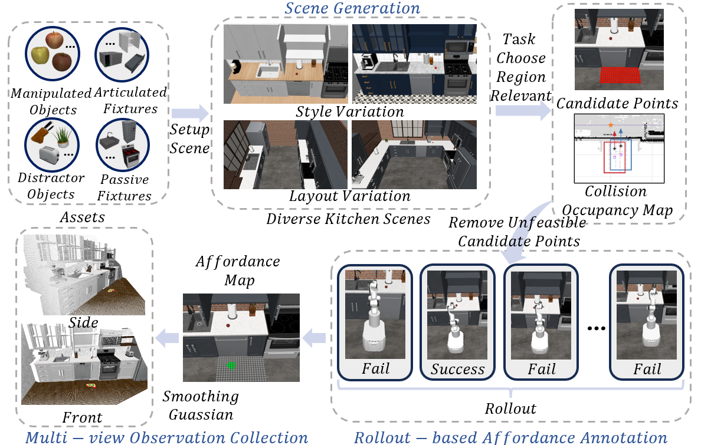
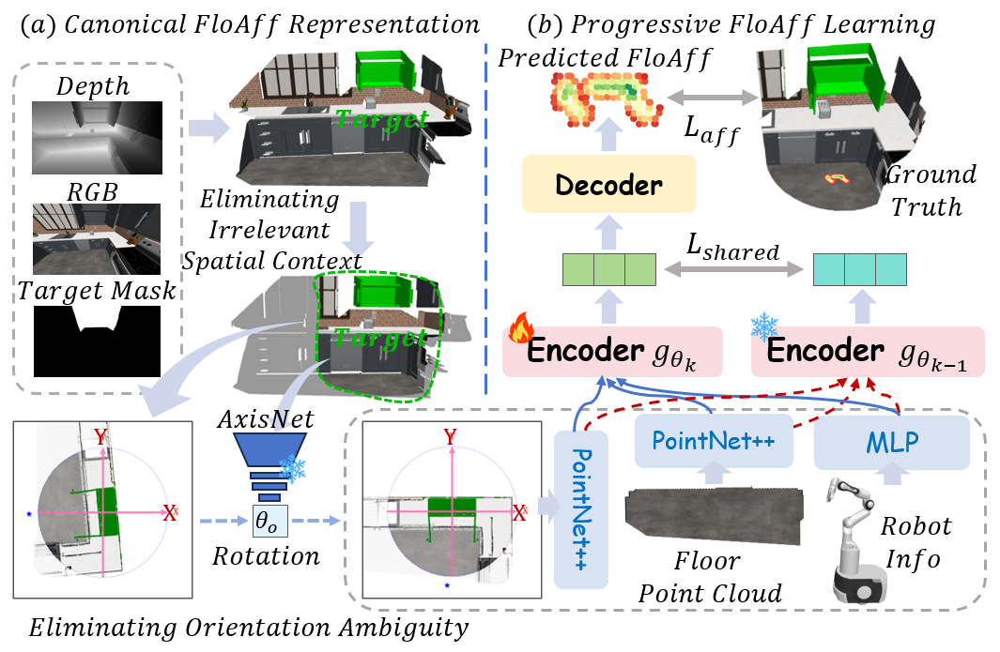
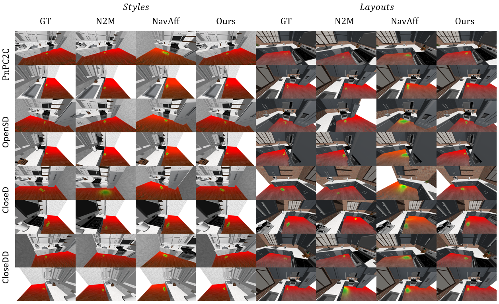

Mobile manipulation requires robots to identify Floor Affordance (FloAff) that maximize downstream manipulation success rather than merely ensuring navigation feasibility. FloAff learning is a target-conditioned local spatial reasoning problem that requires understanding manipulation-effective interaction geometry around the target. Existing methods suffer from representation ambiguity caused by irrelevant spatial context and arbitrary object orientations, while knowledge entanglement across heterogeneous manipulation skills limits the learning of transferable FloAff priors. To address these challenges, we propose a unified framework for FloAff prediction from egocentric multimodal perception through canonical representation learning and progressive affordance prior learning. Specifically, we introduce a Canonical Floor Affordance Representation (CFAR), which learns canonical interaction geometry by preserving affordance-relevant local structure while eliminating nuisance spatial variations unrelated to robot base placement. We further propose Progressive Floor Affordance Learning (PFAL), which progressively acquires transferable FloAff priors from a foundation manipulation task before specializing to heterogeneous downstream skills. To facilitate systematic evaluation, we establish the first cross-scene FloAff-Kitchen benchmark, featuring diverse manipulation skills, scene layouts, furniture styles, and both front-view and side-view observations for evaluating viewpoint robustness and scene generalization. Extensive experiments on three benchmarks demonstrate that our method consistently outperforms strong baselines, while ablation studies validate the effectiveness of each proposed component.
FloAff-Kitchen is constructed within the RoboCasa simulation environment and comprises two scene-generalization settings:
The benchmark includes four representative mobile-manipulation tasks:

The data generation process centers on manipulation-effective standing regions rather than navigation-only reachability. For each target and skill, rollouts are used to annotate floor locations that support successful downstream manipulation. Front-view and side-view observations share identical rollout-generated labels, which enables controlled evaluation of viewpoint robustness. Each task uses scene-level splits with five training scenes and one unseen testing scene. The resulting dataset contains 24,782 RGB-D observations with rollout-generated FloAff annotations, including 13,610 samples in Styles and 11,172 samples in Layouts.
The framework addresses two central issues in FloAff prediction: representation ambiguity from irrelevant spatial context and arbitrary target orientation, and knowledge entanglement across heterogeneous manipulation skills. It therefore combines canonical representation learning with progressive affordance prior learning.
CFAR constructs a target-centered local representation by cropping geometry around the manipulation target, then aligns the local point cloud according to target orientation. This preserves affordance-relevant interaction geometry while removing irrelevant context and orientation-induced ambiguity.
PFAL first learns transferable FloAff priors from a foundation manipulation task, then progressively adapts them to downstream skills. This design keeps shared placement requirements such as reachability, visibility, collision-free execution, and manipulability from being entangled with task-specific constraints.

We evaluate FloAff prediction and downstream FloAff-grounded mobile manipulation.
Table 1. Quantitative evaluation of FloAff prediction across different datasets.
| Dataset | Method (Venue) | RMSE ↓ | logMSE ↓ | PCC ↑ | SIM ↑ |
|---|---|---|---|---|---|
| MoMa-Kitchen | PointNet++ (NeurIPS’17) | 0.164 | 0.0142 | 0.565 | 0.589 |
| VoteNet (ICCV’19) | 0.167 | 0.0143 | 0.543 | 0.570 | |
| H3DNet (ECCV’20) | 0.174 | 0.0156 | 0.503 | 0.522 | |
| NavAff (ICCV’25) | 0.147 | 0.0115 | 0.680 | 0.696 | |
| Ours | 0.073 | 0.0028 | 0.796 | 0.794 | |
| FloAff-Kitchen (Styles) |
NavAff (ICCV’25) | 0.064 | 0.0025 | 0.395 | 0.337 |
| Ours | 0.029 | 0.0004 | 0.863 | 0.862 | |
| FloAff-Kitchen (Layouts) |
NavAff (ICCV’25) | 0.080 | 0.0041 | 0.238 | 0.225 |
| Ours | 0.035 | 0.0006 | 0.738 | 0.721 |
Table 2. Quantitative evaluation of FloAff-grounded MoMa performance on the FloAff-Kitchen benchmarks (multi-task). Oracle describes the MoMa performance at the optimal pose.
| Method (Venue) | Styles Success Rate | Layouts Success Rate | ||||
|---|---|---|---|---|---|---|
| Front | Side | All | Front | Side | All | |
| NavAff (ICCV’25) | 0.28 ± 0.05 | 0.46 ± 0.04 | 0.37 ± 0.03 | 0.28 ± 0.04 | 0.26 ± 0.03 | 0.27 ± 0.03 |
| C2F-Exp (AAAI’26) | 0.53 ± 0.05 | 0.48 ± 0.04 | 0.50 ± 0.03 | 0.50 ± 0.05 | 0.47 ± 0.04 | 0.49 ± 0.05 |
| N2M (ICML’26) | 0.56 ± 0.04 | 0.33 ± 0.04 | 0.44 ± 0.03 | 0.72 ± 0.03 | 0.22 ± 0.03 | 0.47 ± 0.02 |
| Ours | 0.85 ± 0.04 | 0.85 ± 0.03 | 0.85 ± 0.01 | 0.81 ± 0.03 | 0.77 ± 0.03 | 0.79 ± 0.02 |
| Oracle | 0.87 ± 0.04 | 0.88 ± 0.03 | 0.88 ± 0.03 | 0.86 ± 0.02 | 0.87 ± 0.03 | 0.86 ± 0.02 |
Qualitative results compare predicted FloAff maps on different manipulation tasks under both style and layout variations. Across the shown cases, the proposed method produces affordance regions that are closest to the ground truth in location, shape, and covered area, while baseline predictions are more likely to drift under appearance changes or unseen layouts.

If you find our work useful, please consider citing the paper as follows:
@misc{zhong2026floaffkitchen,
title={FloAff-Kitchen: Bridging Navigation and Manipulation via Canonical and Progressive Floor Affordance Learning},
author={Ping Zhong and Manling Teng and Tao Wu and Bolei Chen and Jiazhi Xia and Jianxin Wang},
year={2026},
eprint={2607.24207},
archivePrefix={arXiv},
primaryClass={cs.RO},
url={https://arxiv.org/abs/2607.24207}
}